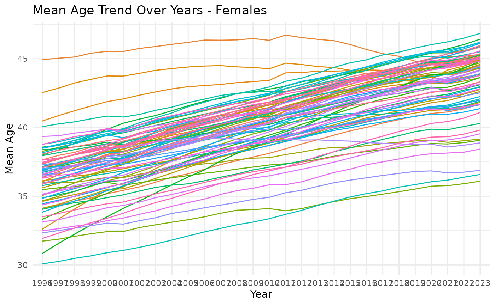
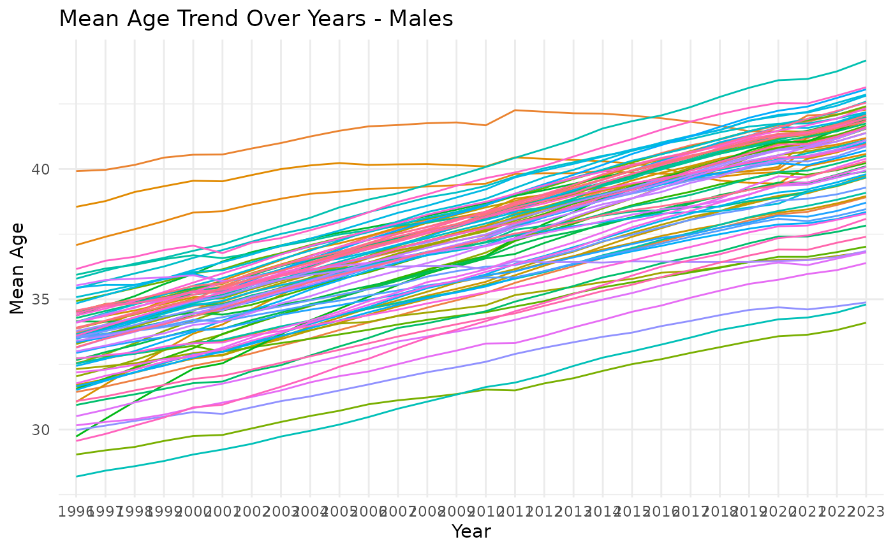

example_analysis.RmdThis script demonstrates how to use the susR package to retrieve data on population size and mean age in Slovak districts from the Slovak Statistical Office API, specifically from tables om7011rr and om7005rr.
It includes: 1) Retrieving list of district codes. 2) Preparing parameters for API call. 3) Retrieving the data with get_susr_data(). 4) Merging data. 5) Performing a basic analysis. 6) Plotting the results.
The table_codes are “om7013rr” and “om7005rr”.
The dimension parameters must be supplied in the same order as they appear in the example href for this table.
For om7013rr we have 3 dimension parameters in this order:
For om7005rr we have 4 dimension parameters in this order:
Since we are interested in 79 districts, we firstly retrieve the
dimension values and use the vector of values to feed
fetch_susr_data() function. The codes are the same for both
tables, so we will do it only once.
districts <- susr_dimension_values("om7013rr",
"om7013rr_vuc") |>
filter(str_detect(element_label, "District of"))
params <- list(
"om7013rr", # 1st table
list( # list of params for 1st table
districts$element_value, # vector of district codes
"all", # all years
"IN010052", # population
c("1", "2") # sex: 1 = M, 2 = F
),
"om7005rr", # 2nd table
list( # list of params for 2nd table
districts$element_value, # vector of district codes
"all", # all years
"IN010089", # mean age
c("1", "2") # sex: 1 = M, 2 = F
)
)
res <- fetch_susr_data(params)
# res is a named list with two entries
pop_df <- res[["om7013rr"]]
age_df <- res[["om7005rr"]]Let’s inspect the data:
summary(pop_df)
#> om7013rr_vuc om7013rr_obd om7013rr_ukaz om7013rr_poh
#> Length:4424 Length:4424 Length:4424 Length:4424
#> Class :character Class :character Class :character Class :character
#> Mode :character Mode :character Mode :character Mode :character
#>
#>
#>
#> om7013rr_data value
#> Length:4424 Min. : 5338
#> Class :character 1st Qu.:19797
#> Mode :character Median :30844
#> Mean :34242
#> 3rd Qu.:47132
#> Max. :90029
summary(age_df)
#> om7005rr_vuc om7005rr_obd om7005rr_ukaz om7005rr_poh
#> Length:4424 Length:4424 Length:4424 Length:4424
#> Class :character Class :character Class :character Class :character
#> Mode :character Mode :character Mode :character Mode :character
#>
#>
#>
#> om7005rr_data value
#> Length:4424 Min. :28.19
#> Class :character 1st Qu.:36.09
#> Mode :character Median :38.58
#> Mean :38.52
#> 3rd Qu.:40.95
#> Max. :46.84We already see, that there are quite some differences in regions both in population and in mean age.
We will adjust the raw data to be more user-friendly and follow more common conventions. Afterwards we will merge both tables into one.
cleaned_pop_df <- pop_df |>
rename( # renaming to more user-friendly names
district = om7013rr_vuc,
year = om7013rr_obd,
population = value,
sex = om7013rr_poh
) |>
mutate(sex = ifelse(sex == "Men", 0, 1)) |> # refactoring sex
select(district, year, sex, population)
cleaned_age_df <- age_df |>
rename( # renaming to more user-friendly names
district = om7005rr_vuc,
year = om7005rr_obd,
mean_age = value,
sex = om7005rr_poh
) |>
mutate(sex = ifelse(sex == "Men", 0, 1)) |> # refactoring sex
select(district, year, sex, mean_age)
merged_df <- cleaned_pop_df |>
left_join(cleaned_age_df, by = join_by(district, year, sex), keep = FALSE)
ggplot(merged_df |> filter(sex == 1), aes(x = year, y = mean_age, group = district, color = district)) +
geom_line() +
labs(title = "Mean Age Trend Over Years - Females", x = "Year", y = "Mean Age") +
theme_minimal() +
guides(color = "none")
ggplot(merged_df |> filter(sex == 0), aes(x = year, y = mean_age, group = district, color = district)) +
geom_line() +
labs(title = "Mean Age Trend Over Years - Males", x = "Year", y = "Mean Age") +
theme_minimal() +
guides(color = "none") As we can see, most of district age getting older. However there are couple of flat-ish ones disrupting this pattern.
# Calculate population per district per year
data_bubble <- merged_df |>
reframe(
.by = c(district, year),
tot_population = sum(population),
mean_age = round(sum(mean_age * population) / tot_population, 1)
) |>
group_by(year) |>
mutate(
age_decile = ntile(mean_age, 10) # Divide districts into deciles by mean age
) |>
ungroup()
# Animated interactive bubble chart
bubble_chart <- plot_ly(
data_bubble,
x = ~tot_population,
y = ~mean_age,
size = ~tot_population,
sizes = c(10, 250),
color = ~age_decile,
frame = ~year,
text = ~district,
type = 'scatter',
mode = 'markers'
) %>%
layout(
title = "Change over Time",
xaxis = list(title = "Total Population"),
yaxis = list(title = "Mean Age"),
showlegend = FALSE
) |>
colorbar(title = "Age decile")
bubble_chartFrom the animated chart we can see that some of the districts have very different “movement” in time. Especially district Senec moves to lower deciles of mean age - meaning that it is ageing slower than other districts. In fact it seems like the mean age is stable in last 20 years.